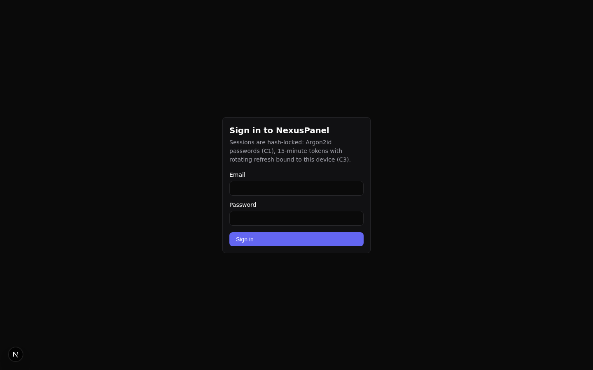

Audit log & chain
Every privileged operation — successful or failed — is recorded in a tamper-evident hash chain. If anyone edits a historical entry, the chain verification fails at exactly that entry.
How the chain works
Each audit entry contains the operation name, its parameters, the
outcome (success or failure), the acting user,
and a timestamp. Before an entry is stored, a SHA-256 hash is computed
over the entry plus the hash of the previous entry. The hashes
therefore form a chain back to the first entry ever written:
entryₙ.hash = SHA-256(entryₙ.fields ‖ entryₙ₋₁.hash)Appends are serialized by a database-level advisory lock inside one transaction, so even concurrent writes can never fork the chain. The current head is kept in a single row that verification re-walks.
What gets audited in M0
| Operation | Audited outcomes |
|---|---|
account.create | success (with the created account), failure (e.g. agent unreachable) |
isolation.provision | failure (slice could not be created) — success is covered by the create entry |
account.suspend / account.resume | success and failure |
account.delete | success and failure |
auth.login | success and failure (locked out, bad credentials, TOTP pending) |
auth.refresh | failure (e.g. session fingerprint mismatch) |
Verify the chain
Verification re-computes every hash in the chain and compares it to the stored head. From the UI (Audit page) or the API:
curl -X POST https://panel.example.test/api/v1/audit/verify \
-H "Authorization: Bearer $TOKEN"
A healthy chain answers {"verified": true, …}. If any
historical row was changed — even a single character in a parameter —
the response reports verified: false and identifies the
first entry where the chain breaks. Because each entry's hash depends on
its predecessor, appending fake entries afterwards also fails: the
rewritten tail will not match the stored head.

Who can read it
Audit endpoints require the audit:read /
audit:verify permissions. The application only ever
appends: no code path updates or deletes audit rows. Database-role-level
enforcement (REVOKing UPDATE/DELETE from the panel's DB role) is part of
the installer hardening work that lands with the production installer.